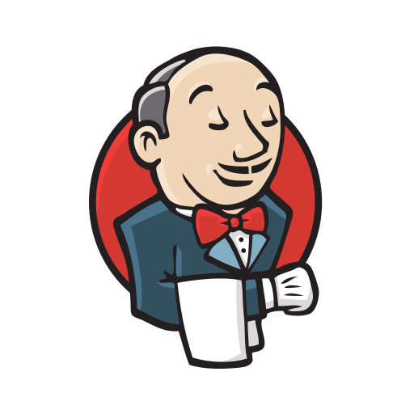

Musings and Meanderings

Side Quest - Jenkins
Jenkins has been on my radar to play with, so I thought I'd spend some time going through this walkthrough I'd found a few weeks ago.
Read more →
Hitting the Trail
Hello! I'm Sam, welcome to my blog! I'm a veteran System Administrator who is working on making the transition to working in the cloud, and you can find out more about me here. My intention here is to document that journey, along with anything else of interest that comes up....
Read more →